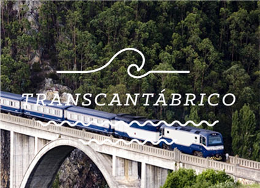
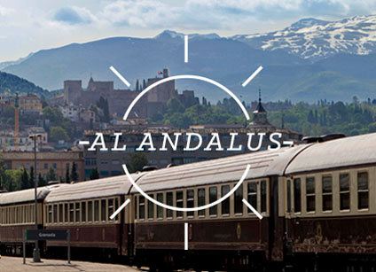

Bienvenido a bordo
Héctor García

Ruta Andalucía
Ruta Extremeña
Ruta Ibérico
Ruta Camino de Santiago
Ruta Rioja y R. Duero

Ruta Andalucía
Ruta Extremeña
Ruta Ibérico
Ruta Camino de Santiago
Ruta Rioja y R. Duero